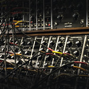

Vintage Synthesizer Museum
A virtual media archive of all your favorite classic synths!
As one of the major advancements in music technology of the XXth century, synthesizers have proven to be groundbreaking, allowing for limitless creativity and new approaches to music composition. Now, a part of popular culture, the music synthesizer has become a staple of the music industry and a valuable tool for the modern musician.
This archive features some of the key figures that revolutionized music forever, from the designers to the performers, as well as synthesizer models that have become classics.
This archive features some of the key figures that revolutionized music forever, from the designers to the performers, as well as synthesizer models that have become classics.
